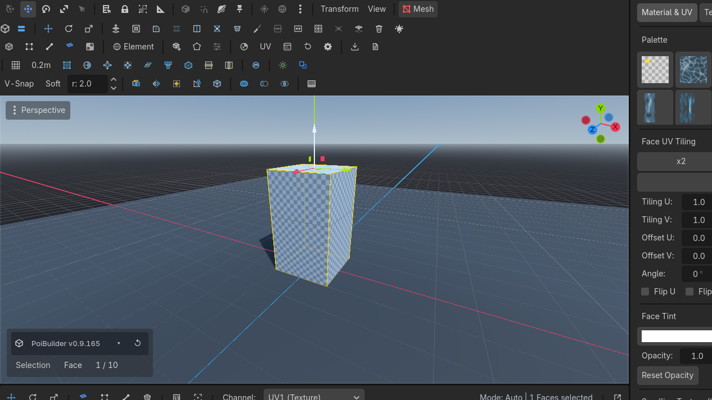
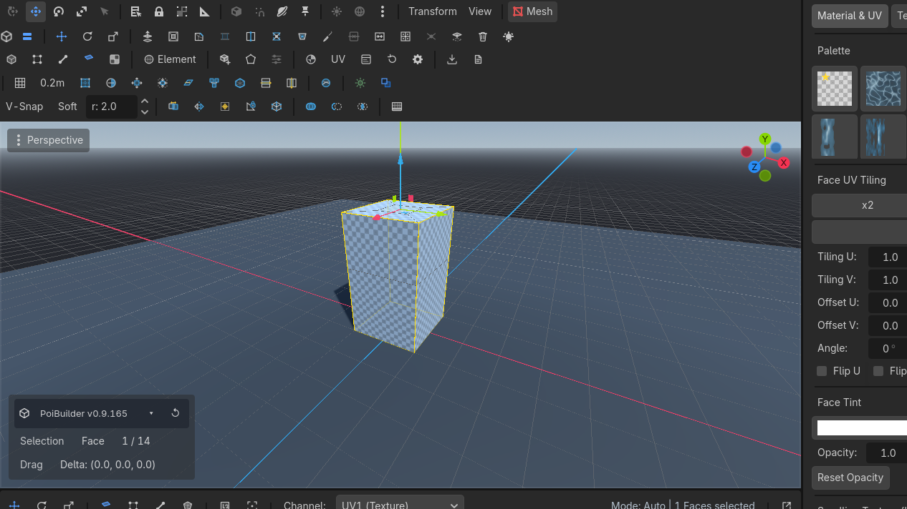
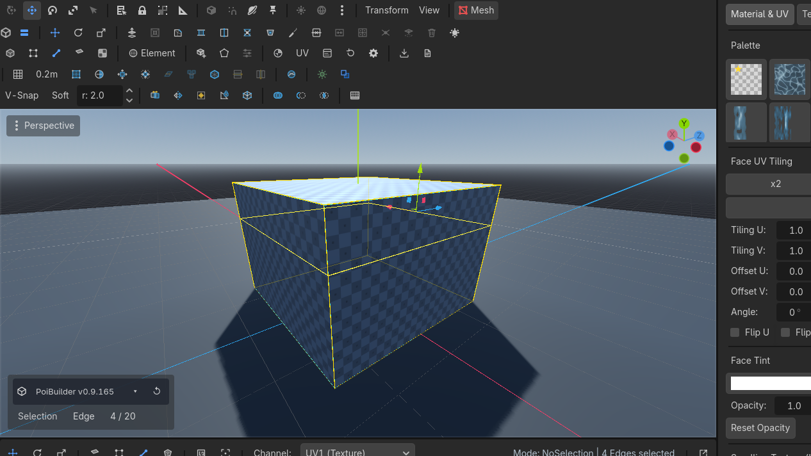
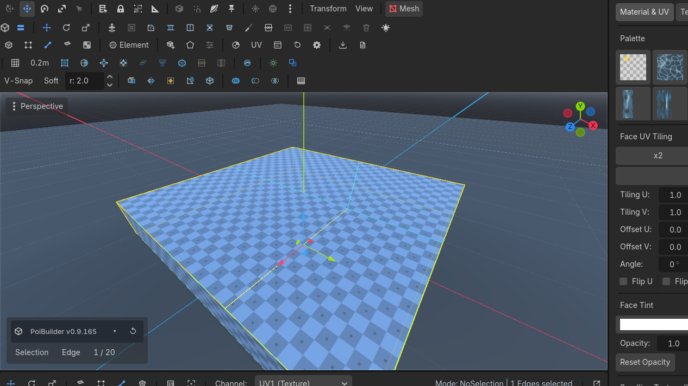
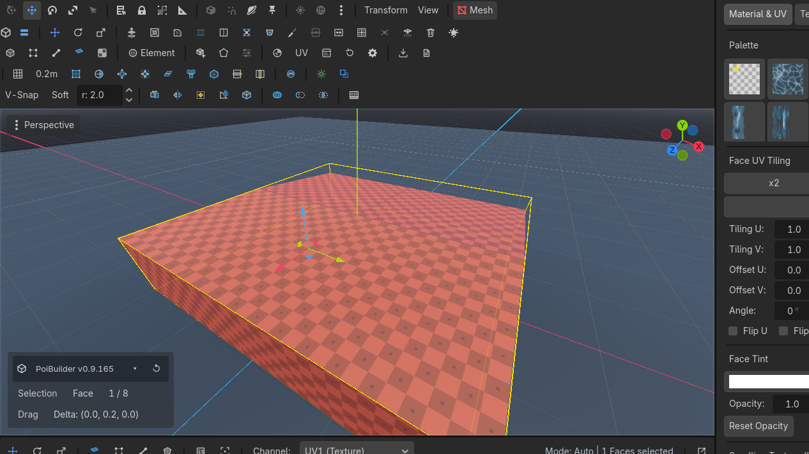
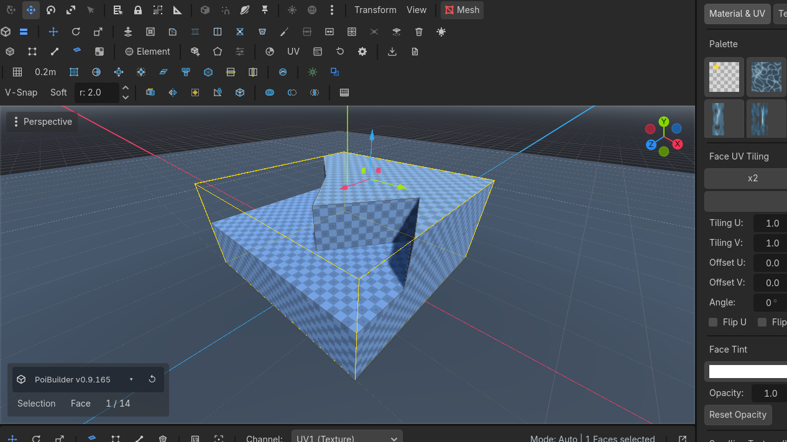
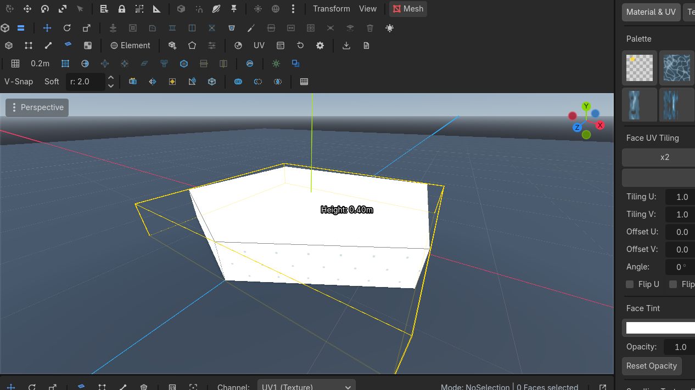

Mesh operations
Topology-rewriting ops undo as a whole-mesh snapshot. Ops that create faces select their output.
All of these live on toolbar row 1. Grey means the current selection cannot feed the op.
Extrude
When: pull a wall, a rim, a new storey.
- Faces: the originals are removed; you get a cap plus side quads (ProBuilder region extrude).
- Edges: fins along the average adjacent normal.
- Live: Shift+Move.
- Key: Alt+E.

Inset
When: a window recess, a panel, a frame.
- Planar ring around the selected faces.
- Live: Shift+Scale on faces.
- Key: Alt+I.

Loop cut
Select an edge that crosses a quad strip (a ring edge). Loop CutRow 1 · Mesh OperationsLoop CutUnbound (rebindable)Inserts an edge loop through the ring of quads crossed by the selected edge.Needs: An edge crossing a quad ring inserts a loop through that ring. Faces with only one ring edge (fans, boundaries) stay unsplit — a T-junction is expected. Corner turns that cannot walk fail cleanly.

Subdivide
Selected quads become four. Then drag the new edge.

Merge faces
Edge-adjacent selected faces collapse into one n-gon per region, fan-triangulated. Coplanar is the common case; you can also merge across a crease into a bent n-gon.

Knife
Click points across a face (edge-to-edge, or an interior hole). Enter completes the cut. Restricts points to the current face; edges can belong to more than one candidate.

N-gon prism
Toolbar N-GonRow 2 · ShapesN-GonDraws a custom polygon, then extrudes it into 3D (Enter sizes the height).Needs: Nothing (always enabled): click a polygon on a surface, Enter, drag height. Any floor plan becomes a volume.

Bevel
Own page: Bevel. Ctrl+B.
Universal rules
- Topology-rewriting ops undo as whole-mesh snapshots. There is no per-vertex undo payload that survives insertion.
- Ops that create faces select those faces.
- Welds make coincident corners one selectable vertex — see Holes & joins.
Loop Cut wants a ring edge (the thing the loop crosses), not a loop edge (the thing the cut creates). Alt+click is the loop; Shift+Alt+click is the ring.